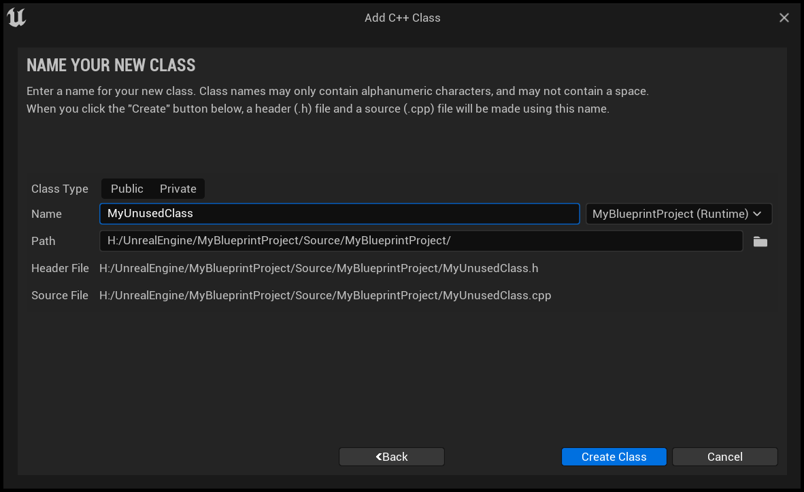
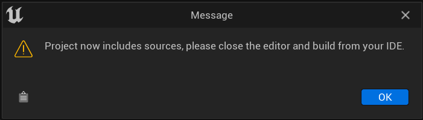
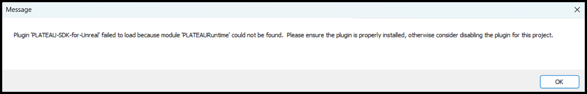

インストール
対応Unrealバージョンのインストール
- Unreal Engineの対応バージョンについて、リリースページ に記載のバージョンを利用してください。
- Epic Games Launcher から指定のバージョンをインストールできます。
Unrealプロジェクトの作成
- 先ほどインストールしたバージョンを起動します。
- Project Defaultsで
C++を選択します。 - 適宜設定を行い
作成を押します。
既存のBlueprintプロジェクトを利用する場合
Note
C++プロジェクトへのSDKを導入される場合はこの章の対応は必要ございません。
BlueprintプロジェクトにSDKを導入し、パッケージを作成した場合はアプリケーション起動時にエラーダイアログが表示されます。パッケージを利用される場合は下記の手順を追加で行って頂く必要がございます。
ダミーのC++クラスを追加
メニューからC++クラスを追加します

親クラスにNoneを選択します

新しいクラス名をつけます 
ダイアログを閉じた後、エディタを閉じます 
YES選択後に作成されたC++クラスがIDEで開かれます
コードをビルドします（エディタを閉じていないとビルドエラーが出ます）

エディターを起動してプロジェクトを開いた後、パッケージを作成してアプリケーションを起動できます
PLATEAU SDK for Unrealの導入
- リリースページから提供されている
PLATEAU-SDK-for-Unreal-{バージョン名}.zipをダウンロードします。 - 作成したプロジェクトのフォルダに
Pluginsという名前のフォルダを作成し、先程ダウンロードしたSDKを解凍しコピーします。 (Pluginsフォルダの作成は、Unreal Engineのコンテンツブラウザからではなく、エクスプローラで作成してください。) Plugins/PLATEAU-SDK-for-Unreal/PLATEAU-SDK-for-Unreal.upluginが存在することを確認します。- プロジェクトを開きます。既にプロジェクトを開いている場合は一度閉じてから再度プロジェクトを開いてください。
- プロジェクトを開く際に以下の画面が表示される場合は
はいを押して完了です。

エディタ設定の変更
自動保存の無効化
3D都市モデルのインポート中にマップの自動保存が実行された際エディタがクラッシュしてしまう場合があるため、以下の手順で自動保存を無効化してください。
エディタの環境設定からロード＆保存中を選択します。自動保存内のマップを保存のチェックを外します。
自動再インポート対象の除外
エディタの環境設定からロード＆保存中→監査するディレクトリ→インデックス[0]を選択します。- 除外対象として
PLATEAU/Datasets/*を追加します。 この操作を行わない場合、取得されたgmlファイル等の生データを手動でインポート対象から除外する必要があります。
この操作を行わない場合、取得されたgmlファイル等の生データを手動でインポート対象から除外する必要があります。
距離スケーリング済みのカメラ速度を使用
エディタの環境設定から距離スケーリングで検索します。距離スケーリング済みのカメラ速度を使用にチェックを入れます。 この操作を行うことで広域なマップでの操作性が向上します。
この操作を行うことで広域なマップでの操作性が向上します。
プラグインをビルドする場合
- Windowsの場合、 Visual Studio の利用を想定しています。
- Visual Studio についても、リリースページ に記載のバージョンを利用してください。
バージョンが違うとビルドに失敗する場合があります。 - Visual Studio のインストール時は、こちらの手順に従って 追加のコンポーネントをインストールしてください。
- Visual Studio についても、リリースページ に記載のバージョンを利用してください。
- MacOSの場合、Xcode がインストールされていることが前提となります。
トラブルシューティング
うまく導入できない場合、次のことをご確認ください。
- お使いのウイルス対策ソフトによっては、SDKに含まれるバイナリファイルが削除されることがあります。ウィルス対策ソフトによってSDKのファイルが削除されないよう設定をお願いします。
- 既存のBlueprintプロジェクトにSDKを導入してパッケージしたアプリケーションを起動した際に下図のエラーが出ます。こちら を参照して下さい。 